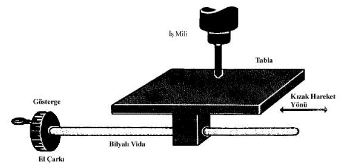
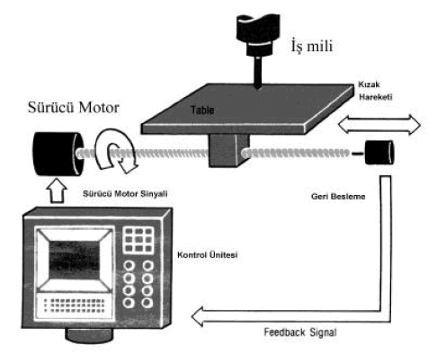
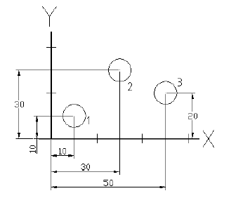
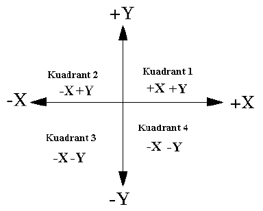
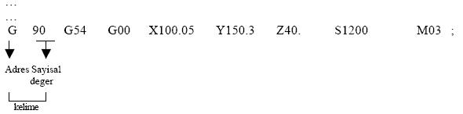

|
Özet
Bilgisayar
teknolojisi ile konvansiyonel imalat iþlemlerinin entegrasyonu
modern takým tezgahlarýný vücuda getirmiþtir. CNC tezgahlarý
bir aþamada üç veya dört konvansiyonel takým tezgahýnýn yapabileceði
operasyonlarý yapabilecek donanýma sahiptir. Üretim organizasyonunda
geliþen yeni fikirler, bir veya birçok imalat yöntemine oldukça
kolay ve en az insan gereksinimiyle adapte olabilen üretim
sistemleri meydana getirmektedir.
Anahtar
Kelimeler: CNC, takým tezgahý, koordinat sistemi, programlama
modu
Bilgisayarlý
Nümerik Kontrol (CNC), Nümerik Kontrollü (NC) tezgahlarýn
ana esaslarýna sahip, fakat ayrýca tezgah kontrol biriminde
isteði uygun þekilde belleðe depolanmýþ bir programa da sahiptir.
CNC büyük ölçüde NC fikrinin terk edilmesinden çok, mikro
elektronik alanýndaki teknolojik geliþmelerin sonucudur.
CNC
takým tezgahlarýnýn tamamýnýn saðladýðý en önemli ve birincil
fayda, otomasyona imkan tanýmasýdýr. CNC tezgahlarýn kullanýlmasý
suretiyle iþ parçalarýnýn imalatý esnasýnda operatörün müdahalesi
en aza indirilmekte veya tamamý ile ortadan kaldýrýlmaktadýr.
Çoðu CNC takým tezgahlarý parça iþlemesi esnasýnda dýþarýdan
bir müdahale olmadan çalýþabilmekte, böylece operatörün yapacaðý
diðer iþler için zaman bulmasýna imkan tanýmaktadýr. Bu, CNC
tezgah sahibine, operatör hatalarýnýn azaltýlmasý, insan hatasýndan
kaynaklanan hatalarýn en aza indirilmesi, iþleme zamanýnýn
önceden ve tam olarak tespit edilebilmesi gibi faydalar saðlar.
Makine program kontrolü altýnda çalýþýyor olacaðýndan, konvansiyonel
takým tezgahýnda ayný parçalarý imal eden bir usta ile kýyaslandýðýnda
CNC, operatörün temel iþleme tecrübesi ile ilgili olan beceri
seviyesi oldukça azaltýlmaktadýr.
CNC
teknolojisinin ikinci temel faydasý, iþ parçalarýnýn hassas
ve devamlý ayný ölçüde çýkmasýdýr. Günümüzün CNC takým tezgahlarý
inanýlmasý güç olan tekrarlama ve pozisyonlama hassasiyeti
deðerlerine sahiptir. Bu ise program kontrol edildikten sonra,
iki, on, veya bin adet iþ parçasýnýn da ayný hassasiyet ve
ölçü tamlýðýnda elde edilebilmesini saðlamaktadýr.
CNC
takým tezgahlarýnýn büyük bir bölümünde sunulan üçüncü önemli
fayda ise, esnekliktir. Bu makineler program vasýtasýyla çalýþtýðýndan,
bir baþka iþ parçasýnýn iþlemeye alýnýp elde edilmesi diðer
makinelere oranla kýyaslanamayacak bir hýzda yerine getirilmektedir.
Bir parça programý test edilip, iþlemeye geçindikten sonra
baþka bir program ile parça iþlenip yine eski programa dönmek
gerektiði durumda, program kayýtlý olduðundan geçim iþlemi
sadece baðlama aparatýnýn hazýrlanmasýndan baþka bir þey olmamaktadýr.
Bu da sonuçta parçadan parçaya geçim süresinin en hýzlý zamanda
olmasý gibi bir baþka faydayý da temin eder.
Bu
makinelerde hazýrlýk iþlemi ve iþleme operasyonuna geçim zamaný
çok kolay olduðundan ve programlar kolaylýkla yüklenebildiðinden,
parça iþleme hazýrlýk zamanýnýn çok kýsa olmasý saðlanmaktadýr.
1.1.
Hareket Kontrolü
Herhangi
bir CNC takým tezgahýnýn en temel fonksiyonu otomatik, hassas
ve tam bir hareket kontrolü saðlayabilmesidir. Tüm CNC takým
tezgahlarýnda, iki veya daha fazla hareket doðrultusu vardýr
ve bunlar eksen olarak adlandýrýlýr. Bu eksenler hareket ettiði
doðrultu boyunca otomatik olarak hassas bir þekilde pozisyonlandýrýlýr.
CNC
tezgahlarda kullanýlan en yaygýn eksen tipleri lineer (belirli
bir doðru boyunca tahrik edilen) ve döner (dairesel bir yay
boyunca tahrik edilen) eksenler þeklindedir.
Konvansiyonel
takým tezgahýnda bir mekanizmayý elle döndürmek suretiyle
kýzak eksenlerine hareket vermek yerine, CNC tezgahlarda hareket,
eksenlere baðlý olan bir döndürme iþlemiyle elde edilmektedir.
Þekil 1'de konvansiyonel bir takým tezgahýnda tabla hareketinin
nasýl yerine getirildiði, Þekil 2'de ise; ayni hareketin CNC
takým tezgahýnda nasýl yerine getirildiði gösterilmektedir.

Þekil 1. Konvansiyonel takým tezgahýnda tabla hareketi

Þekil 2. CNC takým tezgahýnda tabla hareketi
Konvansiyonel bir makine kýzaðý, el çarkýný döndüren operatör
tarafýndan hareket ettirilir. Kýzaðýn hassas pozisyonlandýrýlmasý
operatörün tur sayýsýný saymasý ile elde edilen deðere göstergede
gösterilen skalanýn eklenmesi ile yerine getirilir.
Kontrol
sisteminde icra edilen CNC komutu, sürücü motora hassas olarak
kaç artým yapýlacaðýný belirtir. Sürücü motorun dönmesi sonuçta
bilyeli vidayý döndürür, bilyeli vidanýn dönmesi ile lineer
eksen tahrik hareket ettirilir. Bilyeli vidanýn diðer ucunda
bulunan bir geri besleme cihazý kontrol sistemine komut olarak
verilen artým sayýsýna ulaþýlýp ulaþýlmadýðýný bildirir.
1.2.
Eksen Hareketlerinin Kontrolü
CNC
kullanýcýsýna programda verilen lineer hareket miktarýný hesaplayýp
sürücü motorlara kaç tur daha dönmesi gerektiðini hesaplamasýný
belirtmek gerçekçi olmayacaktýr. Bunun yerine, tüm CNC kontrol
sistemleri koordinat sistemlerinin bazý yapýlarýný kullanmak
suretiyle esken hareketlerinin çok daha basit ve lojiksel
bir yapýda komut olarak verilmesine imkan tanýr. CNC takým
tezgahlarýnda kullanýlan iki popüler koordinat sistemi; kartezyen
koordinat sistemi ile polar koordinat sistemidir. Bununla
birlikte en yaygýn olarak kullanýlan koordinat sistemi kartezyen
koordinat sistemidir ve bu kýsýmda aksi belirtilmediði sürece
kartezyen koordinat sistemi kullanýlacaktýr.
Takým tezgahýnýn her bir lineer ekseni bir grafikteki temel
bir çizgi gibi düþünülebilir. Grafiðin temel çizgileri gibi,
eksenler artým miktarlarýna bölünür. CNC takým tezgahýna ait
kartezyen koordinat sistemdeki her bir lineer eksen en küçük
ölçüm deðerleri cinsinden artýmlara bölünür. Metrik sistemde
en küçük artým birimi 0.001 mm dir. (Döner eksen için en küçük
artým birimi 0.001 derecedir).
Grafikte
olduðu gibi, CNC takým tezgahý koordinat sistemindeki her
bir eksenin de bir yerde baþlangýç noktasý olmalýdýr. Yatay
ve dikey temel çizgilerin çakýþtýðý yer (her iki temel çizginin
de baþlangýç noktasý) grafiðin orijin (temel) noktasý olarak
adlandýrýlýr. Bu orijin noktasý CNC'lerde yaygýn olarak program
sýfýr noktasý (ayni zamanda iþ parçasý sýfýr noktasý, iþ parçasý
sýfýrý, veya program orijini olarak da adlandýrýlýr) olarak
adlandýrýlýr.
Þekil
3 eksen hareketlerinin CNC takým tezgahýnda yaygýn olarak
nasýl belirtilebileceðini göstermektedir. Bu örnekte kullandýðýmýz
iki eksen X ve Y olarak adlandýrýlmaktadýr. CNC takým tezgahýnda
eksen isimlerinin deðiþebileceði düþünülmelidir (eksenleri
adlandýrmada kullanýlan yaygýn isimler arasýnda X, Y, Z, A,
B, C, U, V ve W gösterilebilir); bu örnek sadece eksen hareketlerinin
nasýl kumanda edildiðini göstermek amacýyla verilmektedir.
Þekilde
3 te görüldüðü gibi, iþ parçasýnýn sol alt köþesi her bir
eksenin sýfýr noktasýna uygun düþecek þekilde alýnmýþtýr;
yani iþ parçasýnýn sol alt köþesi program sýfýr noktasý olarak
alýnmaktadýr. Programý yazmadan evvel, programcý ilk olarak
program sýfýr noktasýnýn parça üzerinde neresi kabul edileceðini
belirler. Tipik olarak program sýfýr noktasý tüm ölçülerin
baþladýðý nokta olarak seçilir.
Bu
teknik ile, programcý program sýfýr noktasýnýn sað tarafýndaki
10 mm'lik pozisyona takýmý göndermek istediði takdirde programda
X10.0 kodunu kullanýr. Eðer programcý takýmý program sýfýr
noktasýndan 10 mm yukarýda bulunan bir pozisyona göndermek
ister ise programa Y10.0 þeklinde komut vermesi gerekir. Kontrol
sistemi, komut olarak verilen pozisyona ulaþmasý için eksene
hareket veren servomotorun ve buna akuple edilmiþ olan bilyeli
vidanýn kaç artým döndürülmesi gerektiðini otomatik olarak
hesaplar. Bu sayede programcýya eksen hareketlerinin çok daha
basit bir yapýda verdirilmesi gibi bir yarar saðlar. Þekil
3'te verilen örnekte takýmýn program sýfýr noktasýndan 1 ile
belirtilen pozisyona gitmesi için X10.0 Y10.0 seklinde bir
komutun verilmesi gereklidir.

Þekil 3. CNC tezgahta eksen hareketlerinin kumanda edilmesi
Bu kýsma kadarki örneklerde, tüm noktalar program sýfýr noktasýnýn
ya saðýnda veya yukarýsýnda kalacak þekilde verilmiþtir. Program
sýfýr noktasýnýn saðý ve yukarýsý ile oluþturulan bu alan
kuadrant olarak (bizim örneðimizde 1nci kuadrant) adlandýrýlýr.
CNC tezgahlarda programlama esnasýnda eksene hareket verdirmek
için gerekli olan bitiþ noktasý koordinatlarýnýn diðer kuadrantlarda
verilmesi pek yaygýn deðildir. Bununla birlikte böyle bir
durum ile karþýlaþýldýðý durumda en azýndan eksen koordinatlarýndan
bir tanesinin eksi iþaretli olarak verilmesi gerekmektedir.
Þekil 4'te dört adet kuadrant ve bunlara uygun düþen eksen
koordinat deðerlerinin iþaretleri gösterilmektedir.

Þekil 4. Programlamada kullanýlan kuadrant bölgeleri
1.3.
Absolute (Mutlak) Ve Incremental (Artýmsal) Hareket
Bu
kýsma kadar bahsedilen tüm koordinat deðerleri mutlak programlama
modu kabul edilmek suretiyle verilmiþtir. Mutlak programlama
modunda, eksen hareketleri için gerekli olan koordinatlarýn
bitiþ noktalarý program sýfýr noktasý baz alýnmak suretiyle
belirtilir. Programlamaya yeni baþlayanlar için, hareket komutlarýnýn
verilmesi esnasýnda, bitiþ noktasý koordinatlarýnýn bu mod
ile verilmesi en kolay ve pratik olan bir yoldur. Bununla
birlikte eksen hareketleri için gerekli olan bitiþ noktasý
koordinatlarýnýn belirtilmesinde bir baþka yol (artýmsal)
da kullanýlmaktadýr.
Artýmsal
modda, hareket için gerekli olan bitiþ noktalarý takýmýn mevcut
konumunun referans alýnmasý suretiyle belirtilir. Burada program
sýfýr noktasý baz olarak alýnmamaktadýr. Bunun yerine takýmýn
bulunduðu konum referans alýnmaktadýr. Hareket komutlarýnýn
verilmesinde programcý daima "takýmý daha ne kadar hareket
ettirmeliyim?" sorusunu kendisine soruyor olacaktýr.
Bazý durumlarda artýmsal mod çok faydalý olsa da, genel olarak
bu metot ile program yazmak oldukça zor bir yoldur. Hareket
komutlarýný verirken dikkatli olunmasý gerekmektedir. Genel
olarak programlamaya yeni baþlayanlar, artýmsal modda program
yapma eðilimindedirler. Mutlak programlama modunda çalýþma
durumunda programcý daima "takým hangi pozisyona hareket
ettirilecek?" sorusunu kendisine sorar. Bu pozisyon deðeri
program sýfýr noktasýna göre elde edilen pozisyon deðeridir.
Mutlak
modda program yazma esnasýnda verilecek hareket komutu için
pozisyon belirleme olayýnýn çok kolay olmasýnýn yanýnda, bu
modda çalýþmanýn bir baþka yararý da hareket komutlarýnýn
verilmesi esnasýnda hata yapma olayýnýn en aza indirilmesidir.
Programlama esnasýnda bir hareket komutunda hata yapýlmýþ
ise, sadece bu kýsýmdaki komut düzeltilir; diðer kýsýmlarda
düzeltme yapýlmasýna gerek yoktur. Diðer taraftan artýmsal
modda benzeri bir hata yapýldýðýnda ise, ayni hata hatanýn
yapýldýðý noktadan sonraki diðer tüm kodlara yansýyacak ve
bu da iþi oldukça zorlaþtýracaktýr.
1.4.
Program Sýfýr Noktasýnýn Atanmasý
CNC
kontrol sisteminde program sýfýr noktasýnýn bir þekilde belirtilmesi
gerekmektedir. Bu sýfýr noktasýnýn belirtilme yöntemi makineden
makineye ve kontrolden kontrole farklýlýk gösterir. Bununla
birlikte çoðu kontrol sistemi imalatçýsý aþaðýda bahsedilen
yöntemlerden bir tanesini veya ikisini kullanmak suretiyle
program sýfýrýnýn atanmasýný bünyesinde barýndýrýr. Bu yöntemlerden
eski bir metot olan birinci metot da program sýfýr noktasý
program içinde atanmaktadýr. Bu metot ile programcý program
sýfýr noktasýnýn takýmýn bulunduðu konuma göre nerede bulunduðunu
G92 kodunu kullanmak suretiyle belirtir. Genel olarak bu kod
ya programýn baþýnda veya takým çaðýrma iþlemi sonrasýnda
belirtilir.
1.5.
CNC Programý
Çoðunlukla
piyasada bulunan CNC kontrol sistemlerinin tamamý programlama
amacýyla kelime adres formatýný kullanýrlar. Kelime adres
formatýndan farklý olarak bazý CNC kontrol sistemi imalatçýlarý
nadiren de olsa Diyalog Sistemli Programlama vasýtasýyla programlarýn
yapýlmasýna imkan tanýrlar. Buna karþýn, bu çalýþmada kelime
adres formatý ile programlama iþleminin nasýl yapýlacaðý konusuna
deðinilecektir. Kelime adres formatýnda CNC tezgah programý
cümle benzeri komutlardan oluþmaktadýr. Cümle benzeri komutlar
ise kelime olarak adlandýrdýðýmýz bileþenlerden oluþmaktadýr.
Bir kelime ise, harfleri ifade eden bir adres ile bunu takip
eden sayýsal bir ifadeden oluþmaktadýr. Harfler CNC kontrol
sistemine kelime tipini (X, Y, Z, R, T, S, M v.s.), bunu takibeden
sayýsal deðer ise bu adresin alacaðý sayýsal deðeri belirtir.
Türkçe'de kullanýlan cümlelerin kelimeler vasýtasýyla oluþturulduðu
gibi, CNC tezgah programý da bir dizi CNC tezgaha özgü cümlelerin
arda arda sýralanmasý ile oluþturulur. Aþaðýda verilen örneðe
bakýnýz:
CNC
tezgah programýnýn oluþturulabilmesi için CNC tezgah programcýsý
verilen iþ parçasýný islemek için gerekli olan iþlem basamaklarýný
ilk olarak gözünde canlandýrýr ve canlandýrdýðý iþleme operasyon
sýrasýna göre parça programýný oluþturur. Sonuçta hafýzasýnda
canlandýrdýðý iþlem operasyonlarýný kademe-kademe CNC tezgaha
program olarak yazar. Programcý programý yazmadan evvel parçayý
iþleyebilmek için, ne tür takýmlara gereksinim duyulduðunu
ve bu takýmlarýn hangi sýra ile iþleme operasyonunu yapacaðýný
ve bu iþleme operasyonlarýnýn nasýl bir sýra takip edilmek
suretiyle yerine getirileceðini hafýzasýnda canlandýrmalýdýr.
Eðer bu canlandýrma operasyonunu programcý yerine getiremiyor
ise, programlama esnasýnda problemler ile karþýlaþacak ve
parça programýný yazamayacaktýr. Ýþte usta makine operatörlerinin
neden en iyi CNC tezgah programcýsý olduklarý gerçeðinin ardýnda
bu yatar. Deneyimli bir makine operatörü, yapýlmakta olan
herhangi bir iþleme operasyonunu hafýzasýnda rahatlýkla canlandýrabilme
kabiliyetine sahiptir.
Bir CNC tezgahta parçayý iþlemek için gerekli olan programda
CNC tezgaha iþleme operasyonunu adým adým terfi eden iþleme
operasyon basamaklarýndan (cümle) oluþmaktadýr. Eðer programda
bir hata yapýlmýþ ise, iþlenmek amacýyla programlanan iþ parçasý
elde edilemeyecektir. Aþaðýda CNC iþleme merkezinde iþ parçasý
üzerinde iki adet delik delen bir program verilmektedir. Programda
parantez içinde belirtilen komutlar yerine bunlarýn CNC tezgah
dilinde karþýlýklarý verilmiþtir:
| % |
|
| O1; |
Program
numarasý |
| N005
G54 G90 S400 M03; |
Koordinat
sisteminin, mutlak modun seçimi ve iþ milini saatin dönüþ
yönünde 400 dev/dak'da döndürme |
| N010
G00 X1. Y1.; |
Ýlk
deliðin XY koordinatýna pozisyonlama |
| N015
G43 H01 Z0.1 M08; |
Takým
boyu telafisinin verilmesi ve takýmý 0.1 inç yukarýya
pozisyonlama, suyu açma |
| N020
G01 Z-1.25 F3.5; |
3.5
inç/mm ilerleme ile ilk deliðin delinmesi |
| N025
G00 Z0.1; |
Delikten
takýmý hýzlý olarak referans noktasýndan 0.1 inç yukarý
çýkarma |
| N030
X2.; |
Ýkinci
deliðe hýzlý olarak pozisyonlama |
| N035
G01 Z-1.25; |
3.5
inç/mm ilerleme ile ikinci deliðin delinmesi |
| N040
G00 Z0.1 M09; |
Delikten
takýmý hýzlý olarak referans noktasýndan 0.1 inç yukarý
çýkarma |
| N045
G91 G28 Z0.; |
Z
ekseninde sýfýr noktasýna gitme |
| N050
M30; |
Program
sonu, baþa dön |
| % |
|
Bu
programdaki kelimeler ve komutlar CNC programýnýn verilen
zincirleme bir sýra ile icra edileceðini belirtmektedir. Kontrol
sistemi ilk olarak programda bulunan ilk satýrý (cümle) okur,
yorumlar ve icra eder, bu satýrýn iþlenmesi bittikten sonra
sonraki satýra geçer ve o satýrý okur, yorumlar ve icra eder.
Ýþlem tüm satýrlar sýra ile okunup, yorumlanýp icra edildikten
sonra sona erer.
Þu
ana kadar belirtildiði gibi CNC programý komutlardan, komutlar
ise kelimelerden oluþmaktadýr. Her bir kelime bir harf adresinden
ve bunu takibeden sayýsal bir deðerden oluþmaktadýr. Harf
adresi kontrol sistemine kelime tipini belirtir. CNC kontrol
sistemi imalatçýlarý harf adreslerinin ne ifade ettiðini önceden
belirlemiþlerdir. Her ne kadar harf adreslerinde ufak tefek
farklýlýklar görülse de CNC kontrol imalatçýlarýnýn hemen
hemen tamamýna yakýnýnýn mutabýk olduðu harf adresleri ve
bunlarýn anlamlarý aþaðýda belirtilmektedir.
O
Program numarasý
N Satýr numarasý
G Hazýrlýk fonksiyonu
X X ekseni
Y Y ekseni
Z Z ekseni
R Yarýçap
F Ýlerleme
S Ýs mili devri
H Takým boyu telafisi
D Takým yarýçap telafisi
T Takým seçme
M Ek fonksiyonlar
Görüldüðü
gibi çoðu harf adresleri lojiksel bir ifade olacak þekilde
seçilmiþtir. Bu sebeple akýlda tutulmalarý çok kolaydýr. Özel
fonksiyonlarý belirtmek için G ve M den oluþan iki harf adresi
vardýr. G hazýrlýk fonksiyonu yaygýn olarak CNC tezgah modlarýný
belirtmek amacýyla kullanýlýr. Mutlak mod CNC tezgah programýnda
G90 kodu ile belirtilir. Artýmsal mod ise G91 kodu ile belirtilir.
Bu iki kod CNC tezgahlarda kullanýlan hazýrlýk fonksiyonlarýndan
sadece iki tanesidir.
Hazýrlýk
fonksiyonlarý gibi, ek fonksiyonlar da (M kodlarý) çok çeþitli
özel fonksiyonlarýn programlanmasýna imkan tanýrlar. Genel
olarak ek fonksiyonlar programlanabilir anahtarlar olarak
kullanýlýr. Ayrýca bu fonksiyonlar CNC kontrol sisteminde
bulunan diðer programlanabilir fonksiyonlarýn programlanmasýnda
da kullanýlýrlar.
1.6.
Desimal Nokta Programlama
Bazý
harf adresleri sayýsal deðerlerin reel olarak (ondalýklý)
belirtilmesine imkan tanýrlar. Bunlara iliþkin örnek olarak
X, Y ve R harf adresleri verilebilir. CNC kontrol sistemlerinin
mevcut modellerinin hemen hemen tamamý desimal noktanýn her
bir harf adresinde kullanýlmasýna imkan tanýrlar. Diðer taraftan,
bazý harf adresleri tam sayýlarý ile belirtilecek þekilde
kullanýlýr. Bunlara örnek olarak iþ mili devrinin S, takým
numarasýnýn T, sýra numarasýnýn N, hazýrlýk fonksiyonunun
G ve ek fonksiyonlarýn M sayýsal deðerlerinin tam sayý olarak
belirtilmesi gösterilebilir.
1.7. Diðer Programlanabilir Fonksiyonlar
CNC
kontrol sistemlerinin hemen hemen tamamý eksen hareketleri
haricinde programlanabilir fonksiyonlara sahiptir. Günümüzün
CNC ekipmanlarýnda, makine ile ilgili olan hemen her þey programlanabilmektedir.
Örneðin; CNC iþleme merkezlerinde iþ mili devri ve dönme yönü,
soðutma suyu, takým deðiþtirme ve makine ile ilgili çoðu fonksiyonlar
programlanabilir deðerlerdir. Tüm CNC ekipmanlarý kendilerine
özgü programlanabilir fonksiyonlara sahiptir. Ek olarak prob
sistemleri, takým boyu ölçme sistemleri, palet deðiþtiriciler
ve adaptif kontrol sistemleri gibi bir takým aksesuarlar CNC
kontrol sistemlerinde ve bunlarýn akuple edildiði CNC tezgahlarda
bulunabilmekte ve programlanabilmektedir.
1.8.
Sonuç ve Öneriler
Üretim
süreci düþünüldüðünde CNC ile yapýlan imalat iþlemleri, üretim
maliyeti, zaman ve teknik açýlardan oldukça yararlý sonuçlar
vermektedir.
Hazýrlýk
aþamasýndaki belirsizliklerin giderilmesi ile programlama
aþamasýnda daha hýzlý ve saðlýklý kararlarýn alýnmasý saðlanabilecektir.
Ülkemizde
artýk CNC teknolojisi küçük firmalar tarafýndan bile benimsenmiþtir.
Eðitim kurumlarýnýn da ders programlarýný bu tür yeni teknolojileri
içerecek þekilde geliþtirmeleri ve gerekli laboratuar/ atelye
donanýmlarýný piyasanýn beklentileri doðrultusunda dizayn
etmeleri kaçýnýlmaz olmuþtur. Ayrýca bu alanlarda ülkemizde
ve uluslar arasý alanlarda düzenlenen konferanslara, seminerlere
ve fuarlara katýlmak ve yayýn üretmekle daha iyi sonuçlar
alýnacaðý muhakkaktýr.
KAYNAKLAR:
1. www.ankacnc.com
2. www.TurkCADCAM.net
3. www.formcnc.com.tr
4. YAÐMUR L., "Tasarým
ve Ýmalatta CNC ve CAD/CAM Sistemlerinin Fonksiyonlarý",
Metal Makine Dergisi, Sayý:149, Sayfa 436-554, Eylül-Ekim
2004.
5. "AKKURT, M., "Bilgisayar Destekli Takým Tezgahlarý
(CNC) ve Bilgisayar Destekli Tasarým ve Ýmalat (CAD/CAM) Sistemleri
", Birsen Yayýnevi, Ýstanbul, 1996
6. Albert M.,"The canging of CNC programming", www.mmsonline.com
7.
ÇAKIR, M. C., 2000. "Modern Talaþlý Ýmalat Yöntemleri",
Vipaþ. Bursa.
8. "AKKURT, M., 1992, "Takým Tezgahlarý", Ýstanbul.
9. GROOVER, P. M., 1996, "Fundamentals Of Modern Manufacturing",
New Jersey.
10. BOOTHROYD, G., and KNIGHT, W. A., "Fundamentals of
Machining and Machine Tool", 2. Ed., Marcel Dekker Inc.,
USA., 1989.
11. BLACK, J.T.,"Machining", Metals Handbook,Vol.
16, ASM International,1989
|